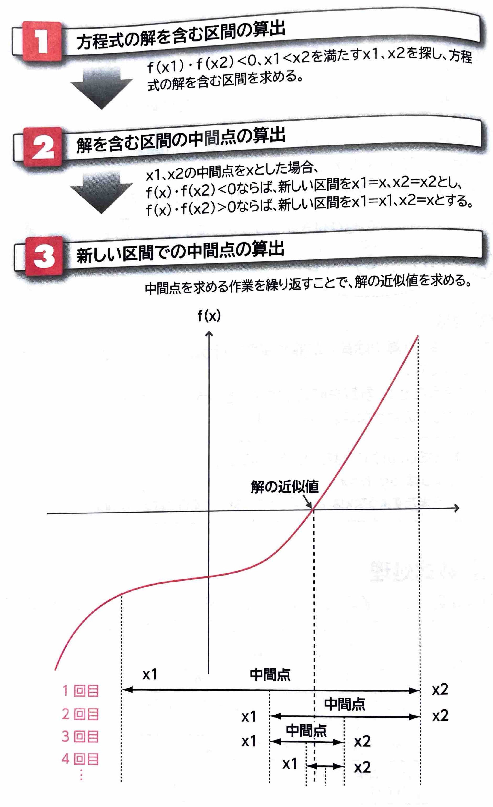

表示
｢数値解析｣
とは、正確な解を求めることができない数学上の問題を近似的に解く手法のことです。数値解析で求める近似的な解のことを｢解の近似値｣
といいます。｢二分法｣
とは、方程式の解を含む区間の中間点を求める作業を繰り返すことによって、解の近似値を求める手法のことです。
(2)補間法｢補間｣
とは、複数の点を通る多項式の曲線で、あるxの値に対するyの値を計算することです。｢補間法｣
にはいくつかの種類がありますが、異なる複数の点を通る多項式を求め、離散的なデータから値を推測できる｢ラグランジュ補間法｣
がよく使われます。